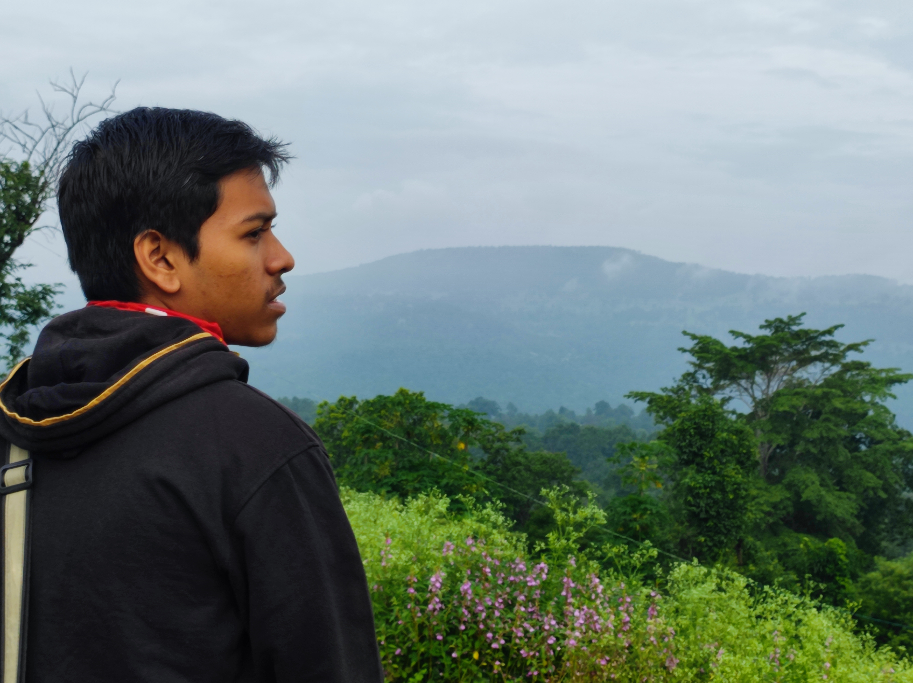

Our Mission
We are committed to reducing food waste by rescuing surplus food and redistributing it to those who need it most. Our mission is to reduce the environmental impact of food waste while feeding communities in need. We believe every bit of wasted food has value, and we aim to put it back where it belongs—on the table.
Meet Our Team

Arindam Das
Site developer